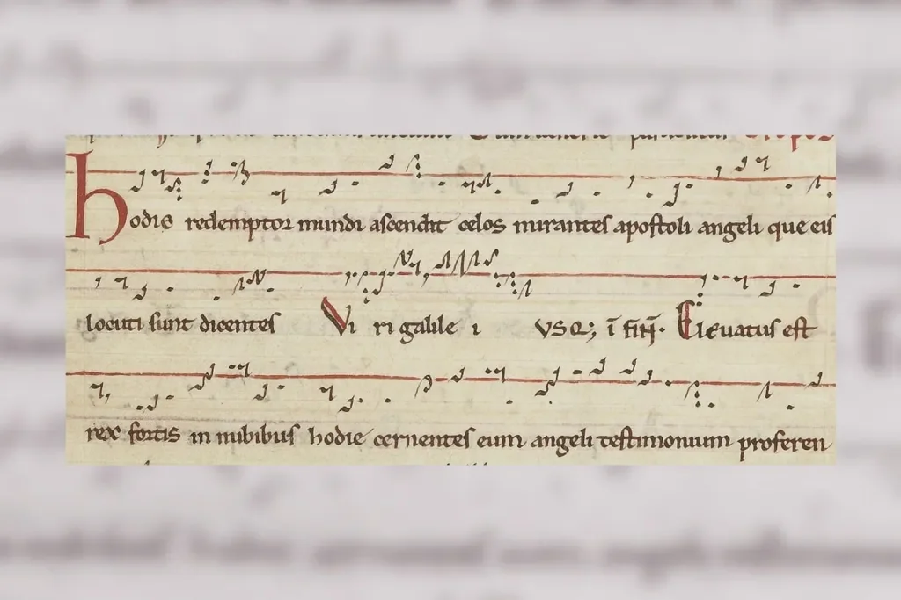
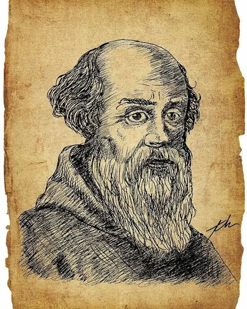

Forma y notación
- Leé esta página entera.
- Respondé en voz alta las preguntas del final y anotá lo que te costó en ✎ Mis notas.
Objetivo: entender cómo evolucionó la notación musical en la Edad Media y qué es el organum, el primer paso hacia la polifonía, sin necesidad de leer música.
Los neumas: la primera notación europea

Antes del pentagrama de Guido d'Arezzo (lección 2.3), la notación musical medieval usaba signos llamados "neumas": pequeños trazos y ganchos escritos arriba de las palabras del texto latino, que indicaban de forma aproximada la dirección de la melodía (si subía, bajaba, se mantenía, hacía un adorno) pero sin precisar exactamente qué nota o qué distancia entre notas. Funcionaban más como una "ayuda memoria" para alguien que ya conocía la melodía de oído, que como una notación completa que permitiera aprender una pieza desde cero solo leyendo.
Esto tiene sentido si pensamos en cómo se transmitía la música en los monasterios: un cantor aprendía el repertorio completo de memoria, escuchando y repitiendo durante años (podían ser literalmente miles de melodías distintas para todo el ciclo litúrgico del año), y los neumas le servían como recordatorio visual de los contornos melódicos, no como una instrucción exacta nota por nota.
El salto a la notación precisa

El sistema de líneas de Guido d'Arezzo resuelve ese problema: al fijar cada línea y cada espacio a una altura exacta, convierte los neumas (que siguen usándose como forma de escritura, con su forma gráfica característica) en una notación completamente precisa. Este invento se expande durante los siglos XI y XII por toda Europa y es la base directa del sistema de pentagrama que seguimos usando hoy, casi mil años después, con 5 líneas en vez de 4.
El organum: el primer paso hacia la polifonía
Alrededor del siglo IX empieza a documentarse una práctica llamada organum: agregar una segunda voz a una melodía de canto gregoriano existente, moviéndose en paralelo a una distancia fija (típicamente una cuarta o una quinta por debajo de la melodía original). Es el primer paso documentado en la historia de la música europea hacia la polifonía: varias voces sonando al mismo tiempo, haciendo cosas relacionadas pero no idénticas.
Para entender la diferencia con la monofonía (lección 2.3): en la monofonía todos cantan la misma melodía exacta. En el organum más simple, una voz canta la melodía original (la "voz principal" o "vox principalis") y otra voz la sigue en paralelo, siempre a la misma distancia (por ejemplo, siempre una quinta más abajo). Suena como dos personas cantando "la misma canción" pero en registros distintos, moviéndose siempre de forma rígida y paralela, como dos autos que viajan siempre a la misma distancia uno del otro en una autopista, sin nunca acercarse ni alejarse.
Con el tiempo (siglos XI-XII), el organum se vuelve más libre: las dos voces ya no se mueven siempre paralelas a la misma distancia, sino que a veces se acercan, a veces se alejan, a veces se cruzan, lo que le da mucha más riqueza sonora. Este desarrollo más libre se conoce como "organum florido" o "melismático", y es el antecedente directo de la escuela de Notre Dame, que vas a estudiar en la lección 2.7.
La notación mensural: cuando el ritmo entra en la partitura
Hasta el siglo XIII, la notación musical (con el sistema de Guido d'Arezzo) indicaba con precisión qué nota tocar, pero no cuánto tiempo debía durar cada nota de forma exacta: el ritmo seguía dependiendo en gran parte de la tradición oral y del flujo natural del texto. Esto empieza a cambiar con la aparición de la notación mensural, desarrollada sobre todo en la escuela de Notre Dame (lección 2.7) y perfeccionada en el siglo XIV: distintas formas gráficas de las notas (cuadradas, con colas, con distintos rellenos) empiezan a indicar distintas duraciones relativas, de forma parecida a como hoy una figura de nota redonda, negra o corchea en una partitura moderna indica duraciones distintas.
Esta innovación es fundamental porque permite, por primera vez en la historia europea, escribir con precisión música polifónica donde varias voces hacen ritmos distintos entre sí al mismo tiempo (no solo melodías distintas, sino ritmos distintos), lo cual es la base técnica que hace posible toda la complejidad rítmica del Ars Nova del siglo XIV (lección 2.8, con Guillaume de Machaut).
Tabla resumen de la evolución de la notación
| Sistema | Época aproximada | Qué permite |
|---|---|---|
| Neumas sin líneas | siglos VIII-X | recordar de forma aproximada si la melodía sube o baja |
| Líneas de Guido d'Arezzo | ~1025 | fijar la altura exacta de cada nota |
| Notación mensural | siglos XIII-XIV | fijar también la duración exacta de cada nota |
Preguntas de repaso
- ¿Qué información daba un neuma antes del sistema de Guido d'Arezzo, y qué información le faltaba?
- ¿Qué es el organum y por qué se lo considera el primer paso hacia la polifonía?
- ¿Cuál es la diferencia entre organum "paralelo" y organum "florido" o melismático?
- ¿Qué problema resuelve la notación mensural que la notación de Guido d'Arezzo todavía no resolvía?
- ¿Por qué la notación mensural es un requisito técnico necesario para la música del Ars Nova?
Respuestas
- Un neuma daba información aproximada sobre la dirección de la melodía: si subía, bajaba, se mantenía o hacía un adorno. Le faltaba precisión exacta sobre qué nota tocar o qué distancia exacta había entre una nota y otra, por lo que funcionaba más como ayuda memoria para alguien que ya conocía la melodía de oído que como una instrucción completa para aprenderla desde cero.
- El organum es la práctica, documentada desde alrededor del siglo IX, de agregar una segunda voz a una melodía de canto gregoriano existente, moviéndose en relación con ella (al principio en paralelo a distancia fija). Se lo considera el primer paso hacia la polifonía porque es el primer caso documentado en la música europea de varias voces sonando al mismo tiempo haciendo cosas relacionadas pero no idénticas, a diferencia de la monofonía donde todos cantan exactamente lo mismo.
- En el organum paralelo, las dos voces se mueven siempre a la misma distancia fija entre sí (por ejemplo, siempre una quinta), como dos autos que viajan siempre a la misma distancia en una autopista. En el organum florido o melismático, las voces ya no mantienen esa distancia fija: a veces se acercan, se alejan o se cruzan, lo que le da mucha más riqueza y variedad sonora.
- La notación de Guido d'Arezzo fijaba con precisión qué nota tocar, pero no cuánto tiempo debía durar exactamente cada nota: el ritmo seguía dependiendo en gran parte de la tradición oral. La notación mensural resolvió esto usando distintas formas gráficas de las notas para indicar distintas duraciones relativas de forma precisa.
- Porque, para escribir música polifónica donde varias voces hacen ritmos distintos entre sí al mismo tiempo (no solo melodías distintas, sino también ritmos distintos y complejos), es indispensable contar con un sistema de notación que fije la duración exacta de cada nota en cada voz; sin eso, sería imposible coordinar con precisión esa complejidad rítmica simultánea.